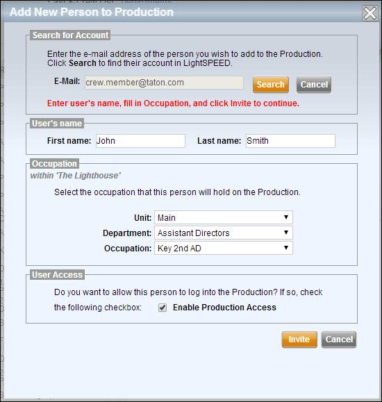

As people are hired onto the production, invite them to Lightspeed and assign their roles and positions. Invite people using the Cast & Crew tab.
Use the following steps to invite a cast or crew member to your production.
1. Select the Cast & Crew Tab.
2. Select the Add button above the Cast & Crew List.
The Add New Person to Production popup window appears.

3. Enter the person's e-mail address to search for them in the Lightspeed directory.
If the person is found in the directory, then their first and last names will be displayed onscreen.
a. Select a production role for the person using the Department and Position dropdown menus.
If the person's position is a part of a specific unit (such as a 2nd Unit) then select the unit.
Note: If you don't see the occupation you need, you can create a custom occupation by selecting (Create New Role) for the person's Position.
b. If you want the person to be able to log into your production, check the Enable Production Access checkbox at the bottom of the screen.
c. Select Save.
The person is added and displayed in the right pane as Invited.
If the person is not found in the directory you may search again for a different e-mail address, or you may create an account for the person who was not found, which will allow you to invite them to your production. To create the person's account:
a. Select the New Account button.
b. Enter the person's first and last names.
c. Select a production role for the person using the Department and Position dropdown menus.
If the person's position is a part of a specific unit (such as a 2nd Unit) then select the unit.
Note: If you don't see the occupation you need, you can create a custom occupation by selecting (Create New Role) for the person's Position.
d. If you want the person to be able to log into your production, check the Enable Production Access checkbox at the bottom of the screen.
e. Select Save.
The person is added and displayed in the right pane as Invited.
4. Enter any other information for the new person such as address, phone number, or images.
5. If the person prefers to receive automatic notifications to their cell, e-mail, or both, make those selections under the Preferences mini-tab.
6. Select the Save button when you have completed entering the person's information.
An invitation e-mail is sent to the user. If the crew member loses their first invitation you may use the Re-Invite button to invite them again.
Related Topics